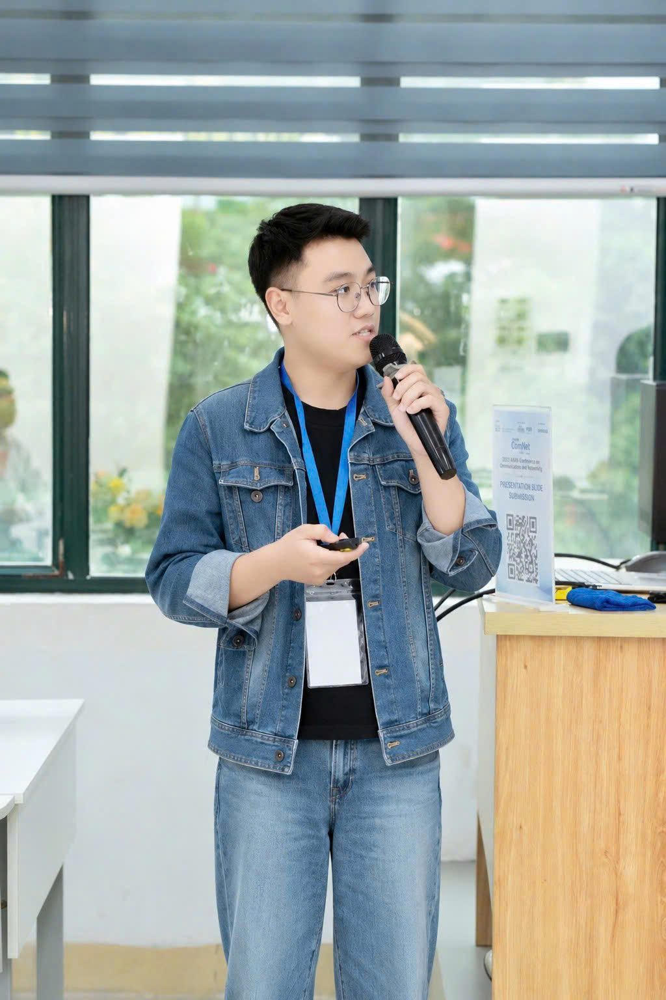

Food recognition & calorie estimation
SAM-Assisted Dataset Generation for Food Recognition and Calorie Estimation with Single-Stage YOLO Segmentation.
Accepted at ASIANComNet 2026. First author and presenter; corresponding author Nguyen Quang Huy.
AI student · PTIT, Hanoi
Dang Van Chien
Fourth-year AI student. I work on computer vision and I want to become an AI researcher.

01 About
I like turning computer-vision ideas into working systems — and learning the math to do it properly.
02 Research
SAM-Assisted Dataset Generation for Food Recognition and Calorie Estimation with Single-Stage YOLO Segmentation.
Accepted at ASIANComNet 2026. First author and presenter; corresponding author Nguyen Quang Huy.
Detecting small disease regions on X-ray images with a YOLO-based computer vision model.
Promising Award at the Harvard University Global Hackathon 2026 (Vietnam Hub).
An AI application that supports ethnic-minority languages.
3rd Prize and 2nd Prize, Most Favorite Product at Young Creation 2025 (HUST). Shown at HN INNOVATION 2026.
A machine-learning and deep-learning system for traffic-light management — where my research started.
Samsung AI Certificate and 3rd Prize at AI FOR LIFE 2025 (PTIT).
03 Honors
04 Path
2023
Started at the Posts and Telecommunications Institute of Technology.
Apr 2025
PTIT scholarship for outstanding academic results.
2025
Samsung AI Certificate with the Smart Traffic Light Management System, then 3rd Prize at AI FOR LIFE 2025.
Oct – Dec 2025
Consolation Prize at Olympic AI PTIT, 3rd Prize and Most Favorite Product at Young Creation, and a Good scholarship.
Winter 2025
Samsung Professional Level Certificate and Fundamentals of Deep Learning.
Mar – Apr 2026
PTIT Startup & Innovation Conference, the HN INNOVATION exhibition, and the Promising Award at the Harvard Hackathon.
Jul 2026
Completed at Tri Thuc Moi.
Sep 2026
Accepted at ASIANComNet 2026, and I'm the one presenting it.
Next stop → AI researcher
06 Contact
Open to research collaborations, internships, and conversations about computer vision and applied math.